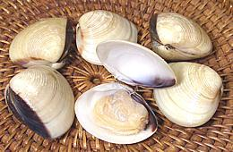

SAFARI
Users
- Varieties -
- Health & Nutrition
Clams
Ark Clams / Blood Clams
[Ark Shell; family Arcidae] Found worldwide, Ark Clams are generally small, mostly 1 to 2 inches, but a few get tp 5 inches. Among the Ark Clams are the only shellfish that have red blood pigments (hemoglobin and myoglobin). This gives them better oxygen transfer allowing them to live in murky low oxygen environments in which most predators cannot thrive.
Blood Cockle[Sò Huyet (Viet); Kkomak (Korea); Anadara granosa alt Tegillarca granosa]
These clams are native to intertidal zones of the Indo-Pacific region,
from South Africa east to Australia and Polynesia, and as far north as
northern Japan. they are of great economic value and farmed in mud
flats in much of their range.
Details and Cooking.
Mexican Blood Clam[Concha Negra (Mexico, Peru, Nicaragua, El Salvador); Chucheca (Panama, Costa Rica); Patas de Mula (Mexico); Concha Prieta (Panama); Pianga (Colombia, Costa Rica; Anadara tuberculosa]
These clams are native to intertidal zones of the Eastern Pacific
from Baja Mexico to Peru. They were banned in the United States
until 2014 when a safety testing procedure was agreed upon between
the U.S. and Mexico.
Details and Cooking.
Akagai[Inflated Ark; Anadara broughtonii]
These clams are native to intertidal zones of the Western Pacific,
south of the northern island of Japan (Hokkaido) down the East
Asian coasts to the Philippines and the Pacific side of Indonesia.
The population is extensive along north central Australia, and some
are found in southern New Zealand.
Details and Cooking.
Noah's Ark shell[Arca noae]
This Ark Clam is native mostly to the Mediterranean and the coast
of Morocco, but to a lesser extent down the west coast of Africa
with a significant population off the tip of South Africa. I do not
think this Ark Clam is a "blood clam".
Details and Cooking.
|
Cherrystone
- see Hard Clam.Freshwater Clams
[genus Corbicula of family Cyrenidae]
The freshwater clam Corbicula leana is used in miso soups in Japan
under the name mashijimi (true shijimi), and in clam soups in
Korea under the name chamjaecheop (true jaecheop).
C. fluminea and C. japonica are similarly used but as
just shijimi and jaecheop. These clams live in both fresh
and brackish waters in Asia, but C. fluminea has become an
invasive pest in North America, probably brought by Asians for use as
food. The photo specimens, purchased frozen from a large Asian market
in Los Angeles (San Gabriel) averaged 7/8 inch long, but
C. fluminea can grow to 2 inches long (measured on the longest
direction).
Geoduck
[Mirugai (Japan), Giant Clam (U.S. sushi bars), Elephant Trunk Clam (China), King Clam (U.S. marketing), Goiduck, Gweduck; Panopea generosa of family Hiatellidae]
The Geoduck (pronounce "gooy-duk") is the largest burrowing clam in the world. Individuals weighing 15 pounds are recorded and bigger ones rumored, but the photo specimen is a normal market size of 2.2 pounds. The shell was 6 inches long and 3-1/2 inches wide. Total length was 11 inches, but that's meaningless since it could stretch out much longer. They are long lived with a record age of 168 years.
This clam is found only on the West Coast of North America from
Washington State north through southern Alaska and from the tidal zone
to 350 feet deep. The name comes from the Nisqually Indian "gwe-duk"
("dig-deep") and the strange spelling is thought to have been a
transcription error.
Details and Cooking.
Hard Clam - Quahog
[Quahogs - Chowder Clams, Cherrystones, Topnecks, Littlenecks, Countnecks; Mercenaria mercenaria of family Veneridae]
This common North Atlantic is found on the coast of North America from Prince Edward Island, Canada all they way down to the Yucatán Peninsula, Mexico but production is centered along the coast of the state of Rhode Island in New England, USA. Some are now farmed on the US and Mexican Pacific coast, England and northern Europe.
While any size can be called a "quahog" that designation is usually
reserved for the largest sizes. The names given above from Chowder Clams
to Countnecks are size designations in descending order. The photo
specimens are Cherrystones from Mexico and were up to 3.4 inches the
long way by 2.7 inches and 1.8 inches thick. 3 pounds yielded just over
6 ounces of meat (12.6%) so at US $2.99/# the meat was $23.73 per pound.
The meat is fairly chewy so these are best chopped up.
Details and Cooking.
Littleneck
- see Hard Clam.Manila Clam
[Japanese Littleneck; Shortneck; Venerupis philippinarum of family Veneridae]
These clams were accidentally introduced in the Pacific Northwest of the U.S. and Canada when Pacific Oysters were brought from Japan. They quickly became an invasive species but are now so popular a harvest both commercially and recreationally that the fishery is highly regulated.
These clams are also an aquaculture crop and are harvested at various
sizes from 1-1/4 inch to 2-1/2 inches. The main problem with this crop is
slow growth, taking over 3 years to reach harvest size. The photo
specimens were typically 1.9 inches the long way by 1.4 inches and 0.8
inch thick - 28 clams to the pound.
Details and Cooking.
Purple Varnish Clam
[Savory Clam (marketing); Purple Mahogany Clam, Dark Mahogany Clam; Nuttallia obscurata of family Psammobiidae]
Native to estuaries of Japan and Korea, These clams were brought
to Victoria Island, Canada around 1988, probably in ship's balast
water. They have spread north from there, and south along the northern
coast of Washington State. A similar introduction now infests most of
the coastal estuaries of the state of Oregon. They grow to about 2.75
inches measured the long way, but the largest of the photo specimens was
2.0 inches, weighing 0.88 ounce (25 gm). They are not currently farmed,
but are harvested from high in the intertidal zone (above the Manilla
Clam zone), where there can be more than 1400 clams per square yard.
Details and Cooking.
Quahog
- see Hard Clam.Queen / Empress Clam
[Guai Fei Pong (Cantonese); Not yet identified]
This clam has recently been available live at a large Asian market in
Los Angeles (San Gabriel). So far, I haven't found them mentioned
anywhere except on the menus of Chinese restaurants, so I have little
information. The largest was 4.04 inches across the long way and 9-5/8
ounces. Yield for the batch was 6-5/8 ounces from 2 ponds 13-1/4 ounces
(14.6%). At 2016 US $3.99 / pound, that's $27.33 per pound edible, but
they were tasty.
Razor Clam
 [typical culinary species of the four most important genera:
[typical culinary species of the four most important genera:
Atlantic Jackknife Clam; Ensis directus (North America, now invading Europe)
Pacific Razor Clam; Siliqua patula (Alaska to Pismo Beach, California)
Razon Shell; Ensis arcuatus (Eastern Canada, Northern Europe)
Gould's Razor Clam; Solon strictus (East Asia) all of family Pharidae]
All the genera listed above look much like the photo specimens, except the Pacific (Siliqua patula) which is much shorter. Most are Norther Hemisphere clams, but one species, Navaja (Ensis macha), inhabits both coasts of South America and is a significant commercial catch in Chile. Razor Clams feature a digging foot at one end and a double siphon at the other, Razor clams are very highly regarded as food but are difficult to catch because they can dig down faster than a person can dig them up.
The photo specimens were purchased live at a large Asian market in
Los Angeles at 2013 US $5.49/pound. They may be Ensis directus
or an almost identical species. The longest was 5.88 inches long
and 7/8 inch wide. They typically weighed 1.63 ounces and yielded 0.63
ounce steamed edible (39%). The open photo specimen to the right has
been steamed.
Details and Cooking.
Great Shipworm
[Teredo navalis of family Teredinidae]
This marine destroyer of wood causes tremendous economic damage in tropical and temperate waters worldwide. Though called a "worm" it is actually a clam related to the Geoduck and Softshell Clam. The shell, at the head end, is tiny and modified to act as a drill for boring into wood. They have a symbiotic relationship with a bacteria that breaks down cellulose into a form the shipworm can digest. This clam can grow to 24 inches long and nearly 1/2 inch in diameter.
Despite their slippery and unappetizing appearance, they are eaten in
Southeast Asia, particularly in Thailand and the Philippines. In Thailand
they are hunted in the mangrove forests and eaten raw, or in a soup-like
curry, chopped up along with tender inner leaves of banana blossom. They
taste similar to other clams.
Photo from
Invertebrate Galore copyright undetermined.
Surf Clam - Atlantic
 [Hokkigai (Japan); Skimmer, Hen Clam (Maine); Sea Clam, Giant Clam,
Bar Clam (Canada); Spisula solidissima & subspecies of
family Mactridae]
[Hokkigai (Japan); Skimmer, Hen Clam (Maine); Sea Clam, Giant Clam,
Bar Clam (Canada); Spisula solidissima & subspecies of
family Mactridae]
This very large clam (often over 6.5 inches) is found in the northwest
Atlantic from the southern Gulf of St. Laurence, Canada, to the Gulf of
Mexico. It is triangular in shape and lives in sand just to the sea side
of the surf zone. In the U.S. the foot (called "tongue") is used
to make clam strips and the strap meat around the edge of the shell and
the adductor muscles that closes the shell are chopped and used for clam
chowder and similar recipes. The foot is also exported to Japan for use
as sushi. It is larger than the foot of their local surf clams.
Details and Cooking.
Surf Clam - Arctic
[Hokkigai (Japan); Stimpson's Surf Clam; Mactromeris polynyma of family Mactridae]
This clam, similar to the Atlantic Surf Clam but a little smaller. There
are several subspecies. These clams are found along the northeast coast
of North America from Rhode Island north through the Gulf of St. Laurence,
and far offshore in the Grand Banks. Other subspecies are found all
around Southern Alaska, Japan and the north coast of China. As with the
Atlantic Surf Clam, the foot, strap meat and adductor muscle are edible.
The main market is Japan for sushi. It has not much penetrated the
American market due to a color difference with the Atlantic Surf Clam,
though experimental aquaculture is under way in the Gulf of Maine
Venus Clam
 [family Veneridae; species unidentified]
[family Veneridae; species unidentified]
While a number of the hard shell clams above (family Veneridae) are "venus clams", this one was not further identified, and I have not been able to pin it to a specific species. It is similar to the Sunray Venus Clam (Macrocallista nimbosa) which is now entering aquaculture production on the southeast coast of the US, but is not identical.
The photo specimens were purchased from a Philippine market in
Los Angeles (Eagle Rock) for 2017 US $2.99 / pound. They were up to
2.38 inches long, 2.15 inches wide, 1.25 inches thick and weighed an
average of 2.26 ounces each. Edible yield was 0.19 ounces each (8.4%)
steamed, or about US $35.60 per edible pound.
White Clam
 [Asian Hard Clam; Meretrix lyrata of family Veneridae]
This small clam is a major seafood export for Vietnam, packaged as whole frozen clams or as cooked clam meat. It is easily recognized by the white shell and the dark black streak covering one of the side edges just as though it had been dipped in paint.
The photo specimens were on the large size at 2 inches long and 1.2 ounces each 15-1/8 ounces yielded 1-3/8 ounces of clam meat (9%), or about US $33 per pound. Since you can buy a pound of frozen white clam meat for about $3 per pound, in the shell is clearly a decorator item. Use them when you want picturesque open clams in your soup bowl like in the cookbook photos.
Zebra Mussels & Quaga Mussels
[Dreissena polymorpha & Dreissena bugensis of family Veneridae]
While called "mussels", these troublesome invasives are actually fresh water Venus Clams. Like mussels, they attach themselves to solid substrates with byssal threads. Originally from the rivers of Russia and Ukraine, they are spreading all over the United States due to recreational boating taking them from one body of water to another. They reproduce in incredible numbers, and are now also a problem in Europe.
There are few natural predators in North America to control them.
Predators that do eat them may also carry toxins and diseases up the
food chain, particularly botulism. While they are usually less than 1
inch in size (2 inches is very unusual) their extreme numbers clog up
water intake pipes and many other underwater structures. These clams
are edible, but eating them is strongly discouraged due to toxins
and bacteria they may cocentrate.
Photo of Zebra Mussel by U.S. Geological Survey =
Public Domain.
Mussels
Blue Mussels
[Blue Mussel; Mytilus edulis (Atlantic) | Black Mussel; Mytilus galloprovincalis (Mediterranean) | Pacific Blue Mussel; Mytilus trossulus (Pacific)]
These three mussels are impossible tell apart save by molecular genetics. They are cold and temperate water mussels which have been introduced to non-native areas including the Southern Hemisphere. All are widely marketed in the areas where they grow and are often farmed. Younger ones may have radial stripes of various colors but not green.
The photo specimens, sold in a Philippine market in Los Angeles as
"Black Mussel" are probably Pacific Blue Mussels. They were small ones
at 2.38 inches long, 1.21 inches across and 081 inch thick. This type
of mussel can grow at least an inch longer. They averaged 0.48 ounces
each and yielded 0.083 ounces steamed edible (17%). At 2013 US
$2.99/pound that comes to $17.52/ pound edible. In the photo, the closed
ones are live and the open one has been steamed. They had good flavor,
much more delicate than New Zealand mussels.
Brown Mussel
[Perna perna]
This South Atlantic mussel is native to the shores of both Africa and
South America and has been accidentally introduced to, and become a pest
along, the coast of Texas. It is known for clogging pipes and marine
equipment and sinking navigation buoys, just like it's close relative the
Asian Green Mussel. It is a candidate for farming
due to is very fast growth but is not yet a commercial crop in the US.
In the wild brown mussels can be toxic due to dinoflagellates they feed
on. Photo by Veronidae distributed under license Creative
Commons
Attribution-ShareAlike v3.0 Unported.
California Mussel
[Mytilus californianus]
These mussels native to the Pacific Coast from the Aleutian Islands to
northern Mexico were harvested by the Chumash Indians and their
predecessors for about 15,000 years. They have orange flesh and can grow
to 8 inches long but are generally a lot smaller. They are still gathered
for human consumption and for use as bait but not as a commercial crop.
Care must be taken in harvesting and consumption because they can be
quite toxic during periods of "red tide".
Photo by Tewy distributed under Creative
Commons
Attribution 2.5.
Asian Green Mussel
 [Philippine Green Mussel; Perna viridis]
[Philippine Green Mussel; Perna viridis]
This Indo-West Pacific mussel is not yet common in most of the U.S. but
is now being farmed in Florida, the Caribbean and South America but is
more well known for clogging pipes and marine equipment. It is fast
growing and can grow to over 4 inches long. In the wild green mussels can
be toxic due to dinoflagellates they feed on and they can concentrate
heavy metals in contaminated water.
Photo by U.S. Geological Survey = Public Domain.
Green Lip Mussel
[New Zealand Green Mussel; Perna canaliculus]
Found only around New Zealand where growing them has become a major
industry this is the "Green Mussel" most common in U.S. seafood markets and
restaurants. Unlike the other green mussel, P. viridis, it is not
suited to tropical climates and can be told from it by radial stripes of brown
or red color most visible near the lip.
Zebra Mussels / Quaga Mussels
- These are actually clams - see Zebra Mussels.Oysters
Atlantic Oyster
[Eastern Oyster; Crassostrea virginica]
This oyster is native to the East Coast of North America and the North American coast of the Gulf of Mexico. It is smoother than the Pacific Oyster and not as deep shelled. Populations were once vast, but many have been greatly reduced out by over-harvesting. They are now being farmed along the Northeast Coast and in Washington's Puget Sound where they are called "Totten Inlet Virginica". The shell is generally elongated, but quite variable in shape, and will be marketed at from 2 to 5 inches across the widest point.
As with Pacific Oysters they are sold named by point of origin.
Well known names are Apalachicola, Blue Point, Cape Cod, Chesapeake,
Chincoteague, Indian River, Kent Island, Malpeque and Wellfleet.
Photo by Yannick Dheilly distributed under license
Creative Commons
Attribution-ShareAlike v3.0 Unported.
European Oyster
[European Flat Oyster, Mud Oyster; Ostrea edulis]
This oyster is native to the eastern coast of the Atlantic, from Norway
to Morocco and in the Mediterranean. They were introduced to the North
American coast in the mid 20th century and have established natural
populations. It is being farmed in Maine, Washington and California, for
sale at a higher price than other oysters. The flavor is described as
"dry and metallic". they are considered excellent for eating raw on the
half shell. Adults measure 1.5 to 4.3 inches across.
Photo by Jan Johan ter Poorten distributed under license
Creative Commons
Attribution-ShareAlike v3.0 Unported.
Olympia Oyster
[Ostrea lurida]
This is the native Pacific oyster, found from southeast Alaska to Baja but most common in bays and estuaries of the state of Washington. It has a thick irregularly shaped fluted shell which may range from white through purple to black in color and rarely grows larger than 1-1/2 inch across.
Formerly this oyster was so abundant in the Pacific Northwest it spawned
a major shellfish industry in Washington state. By the early 20th century
stocks were so decimated by over-harvesting, pollution and silt from highway
construction oyster growers had to bring in the Pacific Oyster to stay
in business. Olympias disappeared entirely from the once abundant Puget Sound
area and were extremely low elsewhere. Stocks have recovered a bit in some
areas and efforts are being made to assist their recovery but populations
are still at low levels. They have also reappeared in San Francisco Bay
in California, spawning a restoration effort there.
Photo by Feet Wet distributed under license Creative
Commons
Attribution v2.0 Generic.
Pacific Oyster
[Japanese Oyster, Miyagi Oyster, Kumamoto Oyster, Crassostrea gigas]
Native to the coasts of Japan, Korea and China, the Pacific Oysters grown on the U.S. West Coast were brought from Japan in 1912. They are primarily an aquaculture crop but some wild populations now exist in Washington, British Columbia and elsewhere. They have now been distributed worldwide and grow on many non-tropical coasts. Pacific oysters can reach a length of as much as 10 inches but are generally marketed much smaller.
They are easily recognized by their large size and deep very rough shells (Atlantic oysters are smoother and European oysters are smoother and rather flat). They are often sold named by the location grown, such as Wescott Bays, Shoalwaters, Quilcenes and Willapa Bays.
A clumping species, Pacific oysters were originally unsuitable for the
"half-shell" market so were shucked in factories and packed in jars.
Today the emphasis is on growing solitary oysters for sale live. A new
variety (Kumamoto) has become popular and has a particularly deep shell
making it ideal for "half-shell" service.
Scallops
Scallops are unique among bivalves in that they can see a lot better, having up to a hundred reflective eyes along the edge of their mantles, and most are free of any attachment (Zen mollusks?) and can swim. Some are even migratory.
The only parts of a scallop that are eaten are the large cylindrical adductor muscle and the roe, both male (white) and female (red). The muscles are sold in two forms: "dry pack" and "wet pack". Wet pack scallops are treated with sodium tripolyphosphate (STPP) which causes them to absorb a lot of water before freezing. "Wet pack" is more profitable to the seller, but quite disappointing to the buyer, as they shrink badly during cooking.
There is a fair amount of scallop farming, 80% of it in China and 10% in Japan, Russia being a distant third. Unlike fish and shrimp farming, bivalve farming is considered ecologically neutral to beneficial.
Atlantic Sea Scallop
[Placopecten magellanicus]
Native to the northeastern coast of North America, from the north shore of the Gulf of St. Lawrence south to Cape Hatteras, North Carolina, this scallop provides by far the largest scallop harvest in the world. They were over-harvested at one time but have rebounded to record levels. The harvest is now considered sustainable.
These scallops are caught by dredging and now by divers. Diver
harvesting is less ecologically damaging and provides a better product.
There is some minor scallop farming of this species within their normal
range. These scallops are up to 6-1/2 inches across (the photo specimen
is just under 6 inches) and they are generally a pinkish color.
Bay Scallop
[Argopecten irradians and others]
Bay scallops are much smaller than the sea scallops. A. irradians is
native to the northeastern coast of North America, and once supported a
large fishery. These scallops have greatly declined due to the usual
coastal problems, mostly from development, but also from over-harvesting
of the sharks that ate the rays that eat the scallops. Today, nearly all
A. irradians in the markets are farmed in China, though some are farmed
in the Eastern US. The photo specimen, species unknown, is 3 inches
across.